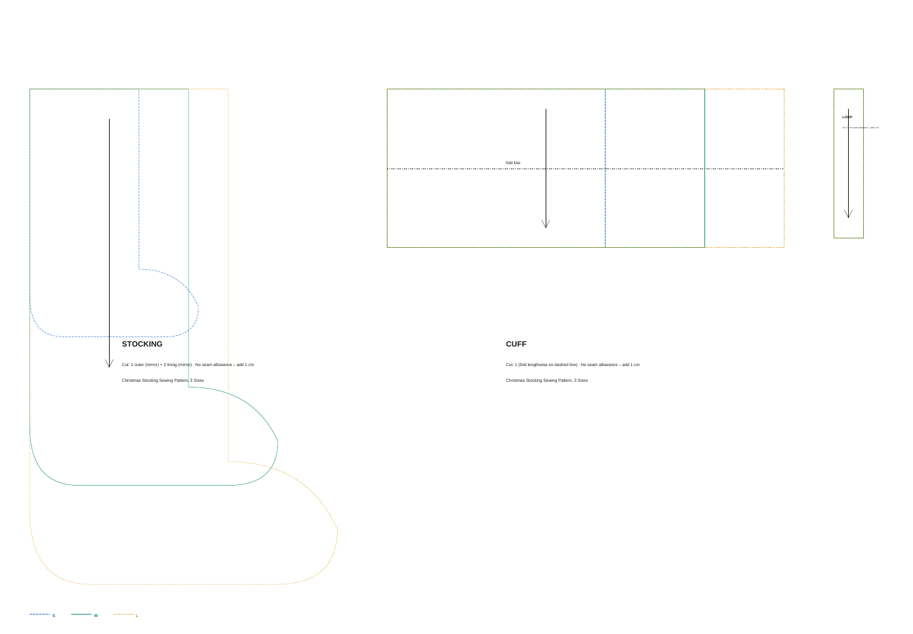

Schnittmuster Nikolausstiefel / Weihnachtsstrumpf, 3 Größen
3 Größen ineinander · ohne Nahtzugabe · A4/Letter oder A0

Fertigmaße
| Größe | Höhe | Schaftbreite | Fußlänge | Umschlag (Zuschnitt) |
|---|
| S | 25 cm | 11 cm | 17 cm | 22 × 16 cm |
| M | 40 cm | 16 cm | 25 cm | 32 × 16 cm |
| L | 50 cm | 20 cm | 31 cm | 40 × 16 cm |
S ist ein kleiner Anhänger oder Gutschein-Stiefel, M die klassische Kamingröße, L passt für große Geschenke. Umschlag = 2 × Schaftbreite, 16 cm hoch vor dem Falten.
Bevor du anfängst
- Ein gefütterter Nikolausstiefel mit Umschlag und Aufhänger. Anfängerfreundlich: gerade Nähte und eine Rundung. Etwa 1 Stunde.
- Ohne Nahtzugabe: an allen Kanten 1 cm zugeben.
- Stoffe: Baumwolle, Patchworkstoff, Flanell, Filz, Samt oder Webpelz für den Umschlag. Futter: einfache Baumwolle.
Drucken
- In 100 % / Originalgröße drucken, Testquadrat auf Seite A1 prüfen.
- Seiten zusammenkleben oder A0 im Copyshop drucken.
Du brauchst
- Außenstoff: 30 × 60 cm (S), 50 × 90 cm (M), 60 × 110 cm (L)
- Gleich viel Futter, Umschlagstoff 45 × 20 cm
- Optional: Volumenvlies für einen festeren Stiefel
Nähschritte
- 2 Außen- und 2 Futterteile zuschneiden, jeweils gegengleich (Stoff rechts auf rechts legen und doppelt schneiden).
- Außenteile rechts auf rechts zusammennähen, oben offen lassen. Rundungen einschneiden, wenden.
- Futter genauso nähen, in der hinteren Naht 8 cm Wendeöffnung lassen. Nicht wenden.
- Aufhänger längs falten, nähen, wenden, zur Schlaufe legen und oben an die hintere Naht stecken.
- Umschlag zum Ring nähen, längs links auf links falten und oben um den Außenstiefel stecken, Kanten bündig.
- Außenstiefel in das Futter schieben (rechts auf rechts), oben rundherum durch alle Lagen nähen.
- Durch die Öffnung wenden, Öffnung schließen, Futter hineinschieben, Umschlag umlegen.
Ideen
- Namen mit Filzbuchstaben oder Stickerei auf den Umschlag.
- Webpelz oder Bommelborte am Umschlag.
- Ein Set in drei Größen für die ganze Familie.
© AureliaVenn · Privater Gebrauch und kleine handgemachte Mengen. Schnittdateien bitte nicht weitergeben oder verkaufen. Mit Software konstruiert.